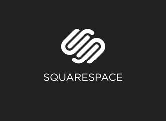

Content Management Systems
Content Management Systems: Wordpress and Squarespace
Here is the video that we watched regarding it:
My take on it:
Squarespace
Squarespace is a website-platform builder hosted on Squarespace servers directly. The service can cost anywhere from $8 to $24 per month for the server. It is a tool to build a website, from a blank canvass all the way to a full web-page. The service is about building beautiful modern web pages. The type of webpage is not limited to a specific type of site, as you can build a blog, e-commerce site, etc. While you don't control the site directly, the ease of use is a major advantage for a person who does not the intricacies of HTML/CSS/JS. Most designs are similar, and customization is limited. This makes great for a person who is not able to design everything directly. They have a Free Trial where you can use their themes/templates as a building block, and then you choose the goal of the site. Starter page uses blocks to add content. It is easy to use and includes services such as the ability to create a logo.
Wordpress

Worpress is more along the lines of an open source software for a website. It takes some know-how to be able to use it, but you can build the website on top of their software. You manage the content of the site directly. Whilte it is free to use, the web hosting through wordpress can be $5-$10. While Squarespace is an all-in-one platform including hosting/images/blocks/etc, Wordpress is more along a software utility where you can control the content yourself. Wordpress originally started as a blog, and has expanded through the years. Plugins help with being able to control how your content is viewed. Where Squarespace seems to spoon-feed you how to build a website, Wordpress lets you control the content more effectively.